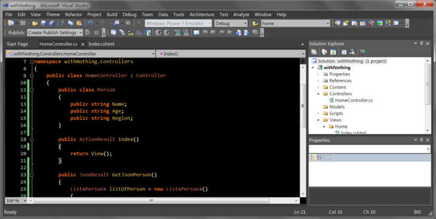
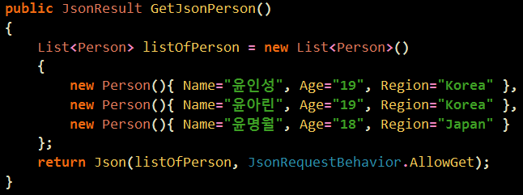
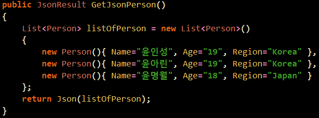
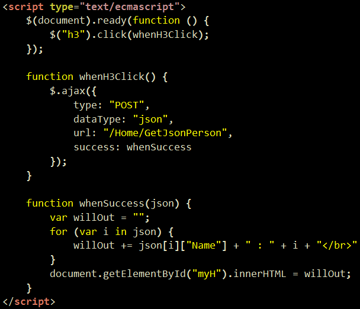

With JSON(3)

이전강의에서 만들었죠

이제 Get을 지워볼 것이랍니다.
"음, Get을 왜 지우나요 .. ?"
『그냥 보안상 문제도 있고 해서 지워주는 것이랍니다.』

오쨌거나 다음과 같이 바꾸면 끝이랍니다. ... !
지난번에는 getJSON을 써봤고 오늘은 그냥 단순히 ajax를 사용했습니다.

MVC 계열이 뜨는 이유는 개발 속도가 빠르기 때문입니다 !
기존의 방식보다 10배 정도 빠릅니다. 애자일 방법론 같은 것을 참고하시면 좋을거에요 ㅎㅎ
크롬 등의 웹 브라우저에서 F12를 눌러 개발자 도구를 띄우신 다음에 오른쪽 아래에 붉은 X 표시가 뜨면, 그걸 클릭해서 클라이언트 오류를 확인해주세요...!
- 서버 오류: 일단 화면 자체가 안 뜬다 => ASP.NET MVC 관련 오류
- 클라이언트 오류: 화면은 뜨는데 제대로 출력이 안 되거나 클릭해도 뭔가 반응이 없다 => 자바스크립트 관련 오류